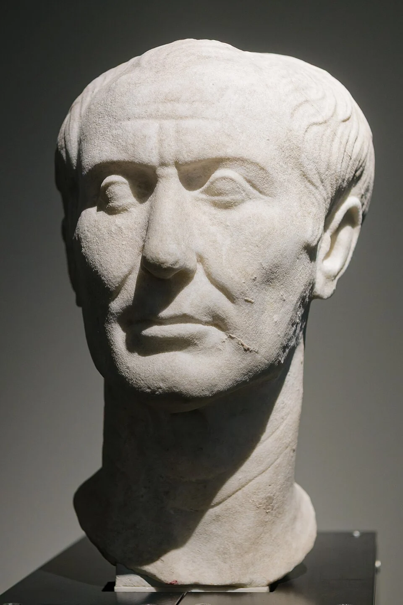

Roma Cumhuriyeti bir günde yıkılmadı; Roma İmparatorluğu da bir günde kurulmadı. Yüzyıllar boyunca değişen kurumlar, savaşlar ve toplumsal mücadeleler, Roma'yı küçük bir İtalya kentinden Akdeniz'in geniş kesimlerini yöneten bir devlete dönüştürdü. Bu dönüşümün merkezinde şu gerilim vardı: Roma'nın seçkinleri tek kişinin mutlak gücünü önlemeye çalışırken, büyüyen toprakları yönetmek için daha uzun süre görev yapan komutanlara ve daha merkezî bir iktidara ihtiyaç duyuyordu.
Cumhuriyet: iktidarı paylaşma fikri, eşitsiz bir siyaset
Roma'nın krallık döneminin geleneksel bitiş tarihi MÖ 509'dur; erken Roma'nın bu evresine ilişkin anlatılar yüzyıllar sonra yazıya geçirildiği için ayrıntılar kesin kabul edilmemelidir. Cumhuriyet düzeninde en yüksek yıllık görevler iki konsül arasında paylaştırıldı. Senato uzun süre görev yapan siyasal seçkinlerin etkili olduğu bir danışma ve yön belirleme merkeziydi; halk meclisleri ise yasalar, seçimler ve savaş-barış kararlarında rol oynuyordu. Yetkiler tek bir anayasada toplanmış değildi; gelenekler, yasalar, makamlar ve toplumsal güç birlikte işliyordu.
Bu düzene bugünkü anlamıyla demokrasi demek yanıltıcı olur. Oy ve makamlar özgür erkek yurttaşlara açıktı; kadınlar, köleleştirilmiş insanlar ve yurttaş olmayanlar siyasal eşitliğe sahip değildi. Yurttaşlar arasında da servet, aile itibarı ve oy verme düzeni etkili farklılıklar vardı. Bununla birlikte halk meclisleri yalnızca dekor değildi: seçimler ve kamusal tartışma, seçkinlerin kararlarını yurttaşların desteğine dayandırmasını gerektiriyordu. James Tan'ın Cumhuriyet'in vergi düzeni üzerine araştırması, siyasal katılımın yerel topluluklar ve seçkinlerin sorumluluklarıyla nasıl iç içe geçtiğine dair özgün bir yorum sunar.[2]
Bir şehirden Akdeniz gücüne
Roma önce İtalya'daki komşularıyla savaştı, ittifaklar kurdu ve farklı toplulukları değişen haklarla kendi siyasal ağına bağladı. MÖ 3. yüzyılda Kartaca'yla giriştiği Pön Savaşları, mücadelenin ölçeğini Akdeniz'e taşıdı. Kartaca'nın MÖ 146'da yenilmesiyle Roma'nın batıdaki üstünlüğü pekişirken, Yunan dünyasındaki savaşlar da doğuda nüfuzunu artırdı. Ancak fetih ile düzenli, doğrudan eyalet yönetimi aynı şey değildi. Fergus Millar, MÖ 200–151 arasındaki Roma'yı değerlendirirken yaygın egemenliğin henüz bütünüyle kurulmuş bir imparatorlukla eş anlamlı olmadığını vurgular.[1]
Roma'nın kontrolü genişledikçe Sicilya, Sardinya, İspanya ve daha sonra Akdeniz'in başka bölgelerinde eyalet yönetimleri kuruldu. Bu toprakların hepsi aynı biçimde yönetilmedi: yerel kentler, krallar ve topluluklarla yapılan anlaşmalar; vergi, asker toplama ve hukuk uygulamalarının biçimini etkiledi. Eyaletler sadece Roma'dan emir alan boş alanlar değildi. Roma yurttaşları ile yerel toplulukların arazi, hukuk ve yönetim üzerindeki pazarlıkları imparatorluk düzenini şekillendirdi. Lisa Pilar Eberle'nin araştırması, doğu eyaletlerinde Roma hukukunun ve toprak ediniminin nasıl farklı grupların çekiştiği bir alan hâline geldiğini gösterir.[3]
Fetihler hazineye gelir, seçkinlere itibar ve bazı yurttaşlara ganimet sağladı; aynı zamanda savaşın yükünü, vergi taleplerini ve zorla yerinden edilmeyi başka topluluklara taşıdı. Köleleştirilmiş insanların emeği, İtalya'daki büyük mülklerden ev içi hizmete ve madenlere kadar ekonomik yaşamın parçasıydı. Fakat “fetih Roma'yı zenginleştirdi” demek, bu zenginliğin kimlerce elde edildiğini ve bedelini kimin ödediğini sormadan eksik kalır. Cumhuriyet'in dayanıklılığı kadar gerilimlerini de, kaynakların ve siyasal gücün nasıl dağıtıldığı üzerinden düşünmek gerekir.[2]
Cumhuriyetin krizi: kişisel rekabet, toplumsal çatlaklar
Roma büyüdükçe eski kent-devleti kurumları, uzak eyaletleri ve yıllarca süren askerî komutaları yönetmekte zorlandı. Savaş ganimetleri ve eyalet gelirleri eşit dağılmadı; toprak, yurttaşlık hakları ve borçlar üzerine tartışmalar sertleşti. MÖ 2. yüzyılın sonundaki reform girişimleri ve siyasal şiddet, daha sonra Marius ile Sulla arasındaki iktidar mücadeleleriyle ağırlaştı. Bu olayları tek bir nedene bağlamak mümkün değil: toplumsal çatışma, seçkinler arası rekabet, ordunun komutanlarla kurduğu bağ ve Cumhuriyet kurumlarının uyum sağlayamaması birbirini besledi. Tan'ın çalışması, askerî harcamaların finansmanındaki değişimin bu siyasal dokuyla ilişkisine dair tartışılabilir, belirli bir açıklama önerir; bu, bütün tarihçilerin üzerinde uzlaştığı tek neden olarak görülmemelidir.[2]
Jül Sezar'ın MÖ 49'da ordusuyla Rubicon'u geçmesi, senato ile komutan arasındaki krizi iç savaşa dönüştürdü. Sezar'ın MÖ 44'te öldürülmesi Cumhuriyet'i eski hâline döndürmedi; ardından gelen mücadelelerde Octavianus, Marcus Antonius ve Lepidus arasında kurulan iktidar ortaklığı da kalıcı olmadı. Bu olayları ve Sezar'ın rolünü daha yakından Jül Sezar yazımızda ele alıyoruz. Önemli nokta, Cumhuriyet'in çöküşünün tek bir “kötü adam”ın eseri olmadığıdır: siyasal rekabeti sınırlaması beklenen mekanizmalar, silahlı güç ve kişisel bağlılıkların karşısında giderek etkisizleşti.
Augustus ve Cumhuriyetten imparatorluk yönetimine geçiş
Octavianus, Antonius ve Kleopatra'yı MÖ 31'de Aktium'da yenilgiye uğrattı; MÖ 30'da Mısır Roma yönetimine geçti. MÖ 27'de Senato ona Augustus unvanını verdi. Sonraki kuşaklar onu Roma'nın ilk imparatoru olarak anacaktı; ancak Augustus kendisini kral ilan etmedi. Cumhuriyet makamlarını ve Senato'yu koruduğunu ileri sürdü, fakat ordunun ve eyaletlerin denetimini elinde tutarak siyasal kararların merkezine yerleşti. Bu nedenle geçişi, bir günde ilan edilmiş yeni bir anayasa değil, tek kişinin üstün gücünün geleneksel kurumlarla birlikte işlediği yeni bir düzen olarak anlamak daha açıklayıcıdır.
Bu yönetim biçimi genellikle Principatus diye adlandırılır. Augustus'un başarısı yalnızca makamları elinde toplamasında değil, bunu Roma'nın özgürlük ve ortak yönetim dilini tümüyle terk etmeden meşru göstermesinde de yatıyordu. Harlow ve Laurence'ın Augustus'un ileri yaştaki imparatorluk imgesini inceleyen araştırması, Principatus'un değişmez bir tasarım olmadığını; hükümdarlığın ve ardıllığın zaman içinde yeniden anlatıldığını gösteren örneklerden biridir.[4]
İmparatorlukta yaşam: tek merkez, farklı eyaletler
İmparatorluk yönetimi, Roma kentindeki saray ve Senato'dan ibaret değildi. İmparatorun temsilcileri, eyalet valileri, askerî birlikler, kent meclisleri ve yerel ileri gelenler farklı düzeylerde görev alıyordu. Roma her yerde aynı dili, hukuku veya gündelik alışkanlıkları zorla tek biçime sokmadı; fakat askerî güç, vergi ve hukuk yoluyla sınırlarını belirledi. Yerel seçkinler, Roma düzeni içinde makam ve ayrıcalık kazanırken kendi kentlerinin kurumlarını da sürdürmeye çalıştı. Dolayısıyla imparatorluğu, yalnızca merkezden taşraya uzanan bir emir zinciri değil, eşitsiz güç koşullarında kurulan bir ilişki ağı olarak düşünmek gerekir.[3]
Roma yönetimi yollar, limanlar, su kemerleri ve askerî altyapı kurdu; kentler arasında ticaret ve insan hareketliliği arttı. Bu yatırımların etkisi bölgeden bölgeye değişiyordu ve çoğu zaman vergi toplama ya da asker sevki gibi yönetim ihtiyaçlarıyla bağlantılıydı. İmparatorlukta ortak bir Roma kimliğinin oluşması da yerel dillerin ve geleneklerin bir anda yok olduğu anlamına gelmedi. Roma yurttaşlığı zamanla daha geniş topluluklara yayıldı; ancak yurttaşlık statüsü, kadınların, köleleştirilmiş insanların ve yoksulların yaşadığı eşitsizlikleri ortadan kaldırmadı.
Bu dünyada sıradan bir insanın hayatı, Roma'da yaşayan bir senatörünkiyle aynı değildi. Bir asker sınır garnizonunda görev yapabilir, bir tüccar Akdeniz limanları arasında seyahat edebilir, bir çiftçi yerel vergileri ve hasat riskini göğüsleyebilir, köleleştirilmiş bir kişi ise kendi emeği üzerinde söz sahibi olmayabilirdi. “Roma barışı” olarak anılan uzun istikrar dönemleri bazı bölgelerde güvenli ticaret ve kent yaşamına katkı sağladı; barışın kendisi de fetih ve askerî üstünlükle korunuyordu. Bu nedenle Roma mirasını yalnızca anıtlar ve yollarla değil, bu düzenin imkânlarını ve maliyetlerini kimin taşıdığıyla birlikte değerlendirmek gerekir.
Roma ne zaman sona erdi?
“Roma İmparatorluğu'nun sonu” tek bir tarihe indirgenemez. MS 395'te I. Theodosius'un ölümünün ardından oğulları imparatorluğu doğu ve batı yönetim merkezleri üzerinden yönetti. MS 476'da Batı'daki son imparator Romulus Augustulus tahttan indirildi; bu tarih Batı Roma imparatorluk makamının sonu için kullanışlı bir işarettir. Fakat Konstantinopolis merkezli Doğu Roma devleti varlığını sürdürdü ve sakinleri kendilerini Romalı olarak görmeye devam etti. Roma'nın doğudaki devamı ve Anadolu'yla ilişkisi için Roma ve Bizans döneminde Anadolu yazımıza geçebilirsiniz.
Roma'nın uzun ömrü, değişmeden kalmasının değil, kurumlarını ve yönetim biçimlerini farklı koşullarda yeniden kurmasının sonucuydu. Cumhuriyet'in seçim ve ortak makam geleneği, imparatorların kişisel iktidarıyla ortadan kalkmadı; farklı biçimlerde yaşamayı sürdürdü. Bu tarih, gücün nasıl paylaşıldığı kadar, siyasal bir düzenin kimleri yurttaş saydığı ve genişledikçe hangi bedelleri başkalarına yüklediği üzerine de düşünmeye çağırıyor.
Kısa zaman çizelgesi
Kaynaklar ve görsel bilgisi
- Fergus Millar, “The Political Character of the Classical Roman Republic, 200–151 B.C.”, The Journal of Roman Studies, 74 (1984), s. 1–19. Roma'nın Akdeniz'deki erken üstünlüğü ile eyalet imparatorluğunun gelişimi arasındaki farkı tartışan araştırma makalesi. DOI ve Cambridge University Press makale kaydı.
- James Tan, “Political Cohesion and Fiscal Systems in the Roman Republic,” Frontiers in Political Science, 4 (2022), 803030. Cumhuriyet'te vergi, askerî finansman ve siyasal bağlılık ilişkisine dair özgün araştırma; makaledeki açıklama yazarın tartışmaya açık yorumudur. DOI ve makalenin tam metni.
- Lisa Pilar Eberle, “Law, Empire, and the Making of Roman Estates in the Provinces During the Late Republic,” Critical Analysis of Law, 3, no. 1 (2016). Geç Cumhuriyet'te doğu eyaletlerinde hukuk, arazi ve farklı topluluklar arasındaki ilişkileri inceleyen araştırma makalesi. DOI ve Toronto Üniversitesi makale kaydı.
- Mary Harlow ve Ray Laurence, “Augustus Senex: Old Age and the Remaking of the Principate,” Greece & Rome, 64, no. 2 (2017), s. 115–131. Augustus'un ileri yaşını, ardıllık fikrini ve Principatus'un yeniden sunuluşunu ele alan araştırma makalesi. DOI ve Cambridge University Press makale kaydı.
- Tusculum'dan Jül Sezar büstü, Torino Museo di Antichità, envanter 2089. Fotoğraf: Marie-Lan Taÿ Pamart, CC BY 4.0. Fotoğraf ve lisans kaydı; müze kataloğu.
Bu yazıdaki güncel tarihsel yorumlar, kaynakçada bağlantısı verilen akademik dergi makalelerine dayandırılmıştır. Roma'nın kuruluşu ve dönem sınırları gibi geleneksel tarihler kesin ve tartışmasız kayıtlar olarak sunulmamıştır. Özellikle Cumhuriyet'in dönüşümüne ilişkin tek nedenli açıklamalardan kaçınılmıştır.